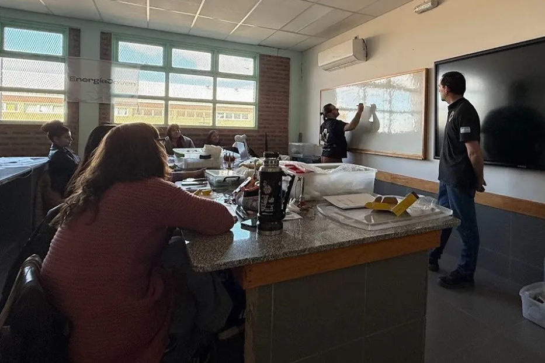

Educación Ambiental - Concientizando sobre nuestros pasos

Ser concientes de la contaminación que generamos en el día a día puede ayudarnos en muchos aspectos. En la actualidad
Muchas herramientas que usamos al transcurrir el día son fuentes de contaminación, unas mas graves que otras. Al saber cuales son y
que tipo de contaminación generan nos ayuda a saber buscar alternativas o como reducir sus generación de contaminación, permitiendo tener un
ambiente mas optimo y saludable.
¿Cual es el objetivo de este programa?
Este programa busca generar conciencia sobre el cuidado del medio ambiente a través de talleres, charlas y actividades educativas. Se trabajan temas como reciclaje, consumo responsable, cambio climático y biodiversidad.
¿A Quien Está Dirigido?

Está orientado a estudiantes de nivel primario y secundario, docentes, y público en general interesado en aprender sobre el impacto ambiental.
¿Como Puedo Participar?
Se puede participar- Asistiendo a los talleres.
- solicitando charlas para instituciones educativas
- sumándose como voluntario para facilitar actividades educativas.